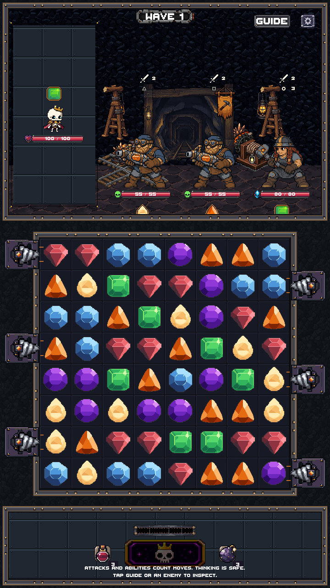
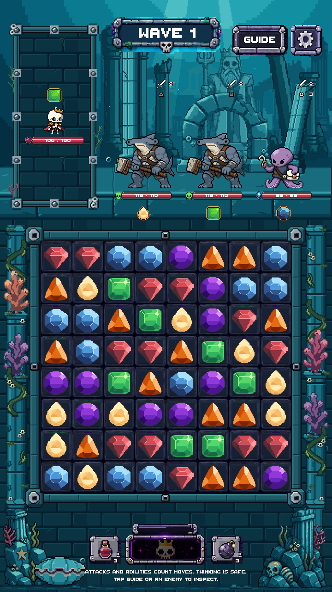
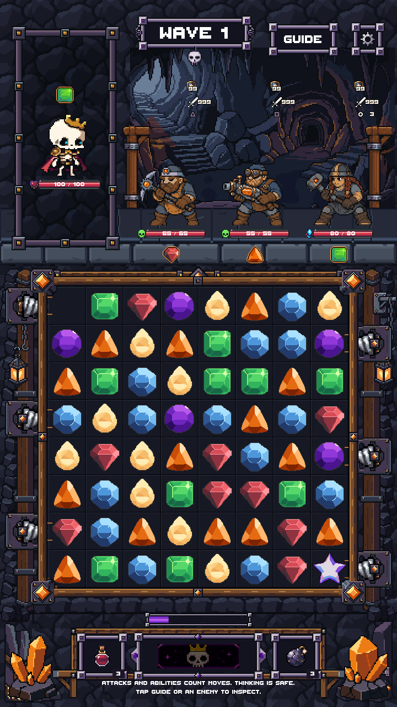
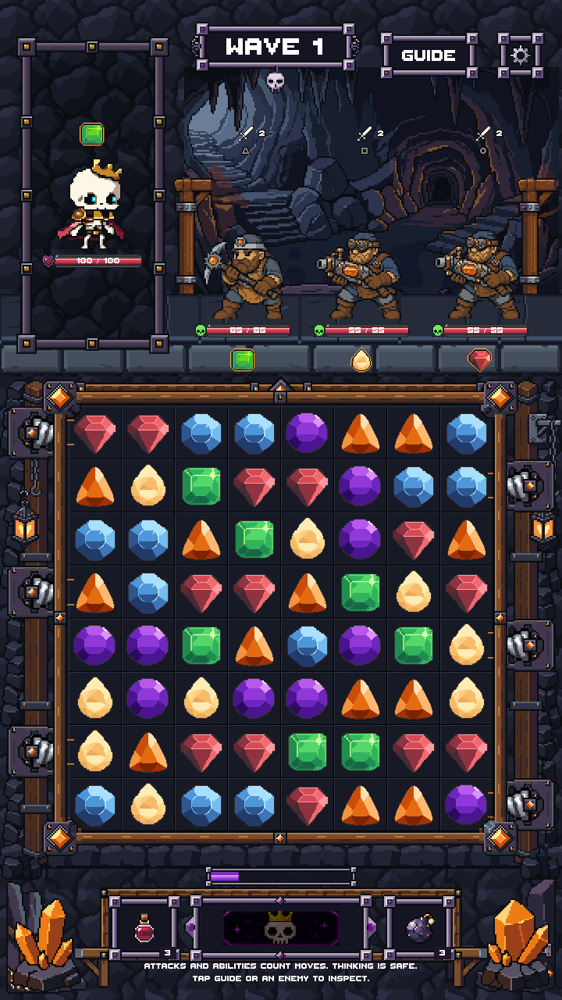

Real enemies, gems, controls, health bars and six working drills. No art-review scene is loaded. The original modular sprite files are preserved. Drowned Court was already on main through PR #212 and is verified below.
Verification report · Android build result


The first tile breaks on launch. Later occupied cells hold the spinning bit at contact, then break before entry. The socket stays empty until the terminal burst finishes and reload begins. GIF timing follows the recorded Unity sample times; the PNG captures preserve full color.

